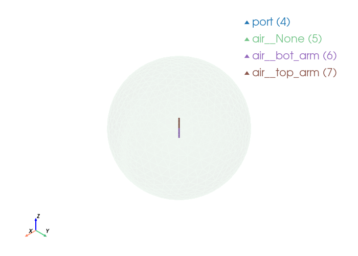

Dipole Antenna Mesh with PalaceToolkit#
This notebook uses PalaceToolkit utilities with a robust workflow:
build primitives
fragment once for conformal topology
define
Entityobjects from fragmented geometryrun
run_entity_pipeline, refine withrefine_near_surfaces, thengenerate_3d_meshvisualize with
palacetoolkit.viz
from pathlib import Path
import math
import gmsh
from palacetoolkit.geometry import xmin, xmax, ymin, ymax, zmin, zmax, extract_tag
from palacetoolkit.mesh import Entity, run_entity_pipeline, generate_3d_mesh, create_graded_mesh
from palacetoolkit.viz import view_mesh
from palacetoolkit.simulation import generate_palace_config_from_entities, run_palace
from palacetoolkit.verify_topology import verify, print_report, visualise_problems
wavelength = 4.0
arm_length = wavelength / 4
arm_radius = arm_length / 20
gap_size = arm_length / 50
outer_boundary_radius = 1.5 * wavelength
mesh_file = "dipole.msh"
if gmsh.isInitialized():
gmsh.finalize()
gmsh.initialize()
gmsh.option.setNumber("General.Verbosity", 2)
gmsh.model.add("dipole_entity_pipeline")
occ = gmsh.model.occ
air = occ.addSphere(0, 0, 0, outer_boundary_radius)
top_arm = occ.addBox(-arm_radius, -arm_radius, gap_size / 2, 2 * arm_radius, 2 * arm_radius, arm_length)
bot_arm = occ.addBox(-arm_radius, -arm_radius, -gap_size / 2 - arm_length, 2 * arm_radius, 2 * arm_radius, arm_length)
port_sheet = occ.addRectangle(-arm_radius, -gap_size / 2, 0, 2 * arm_radius, gap_size)
occ.rotate([(2, port_sheet)], 0, 0, 0, 1, 0, 0, math.pi / 2)
occ.synchronize()
# Entity + boolean pipeline for named physical groups.
entities = [
Entity("air", dim=3, mesh_order=2, btype="dielectric", tags=[air], loss_tan=0.0, eps_r=1.0, mu_r=1.0),
Entity("top_arm", dim=3, mesh_order=1, btype="pec", tags=[top_arm]),
Entity("bot_arm", dim=3, mesh_order=1, btype="pec", tags=[bot_arm]),
Entity("port", dim=2, mesh_order=0, btype="lumped_port", tags=[port_sheet], R=50.0, direction="+Z", excitation=True),
]
pg_map = run_entity_pipeline(entities)
create_graded_mesh(
wavelength,
ppw_near=30,
ppw_far=5,
transition_distance=wavelength / 4,
set_as_background=True
)
generate_3d_mesh(entities, output_file=mesh_file, optimize=True)
gmsh.finalize()
pg_map
Physical group 'air' (dim=3): pg=1, tags=[1]
Physical group 'top_arm' (dim=3): pg=2, tags=[2]
Physical group 'bot_arm' (dim=3): pg=3, tags=[3]
Physical group 'port' (dim=2): pg=4, tags=[14]
Physical group 'air__None' (dim=2): pg=5, tags=[23]
Physical group 'air__bot_arm' (dim=2): pg=6, tags=[19, 10, 21, 22, 11, 12, 20]
Physical group 'air__top_arm' (dim=2): pg=7, tags=[15, 4, 7, 5, 17, 18, 16]
global: 35 curves, SizeMin=0.1333
ppw_near=30 ppw_far=5
SizeMax=0.8000 transition=1.0000
Mesh saved to dipole.msh
Nodes: 2621
Elements: 14161
{'port': 4,
'air__None': 5,
'air__bot_arm': 6,
'air__top_arm': 7,
'air': 1,
'top_arm': 2,
'bot_arm': 3}
view_mesh(mesh_file, transparent_groups=["air__None"])
Loading mesh file: dipole.msh
Groups to render transparent: ['air__None']
Mesh loaded successfully with 2 cell blocks
Found 2938 triangles total
Physical group tags in mesh: {4: 'port', 5: 'air__None', 6: 'air__bot_arm', 7: 'air__top_arm'}

config_file: str = "dipole_antenna.json"
mesh_file = "dipole.msh"
# Frequency sweep centered around the dipole resonance.
# Each arm is lambda/4, so total dipole length is lambda/2 and
# the resonant frequency is approximately f0 = c / lambda.
c0 = 299_792_458.0
f0_hz = c0 / wavelength
f0_ghz = f0_hz / 1e9
freq_min: float = 0.75 * f0_ghz
freq_max: float = 1.25 * f0_ghz
freq_step: float = (freq_max-freq_min)/20
solver_order: int = 2
print(f"Estimated f0 = {f0_ghz:.6f} GHz")
print(f"Sweep: {freq_min:.6f} to {freq_max:.6f} GHz (step {freq_step:.6f} GHz)")
generate_palace_config_from_entities(entity_defs = [e.to_dict() for e in entities],
pg_map = pg_map,
mesh_file = mesh_file,
output_file = config_file,
sim_type="driven",
freq_min = freq_min,
freq_max = freq_max,
freq_step = freq_step ,
L0 = 1.0,
solver_order = solver_order,
absorbing_order = 2,
farfield=True)
Estimated f0 = 0.074948 GHz
Sweep: 0.056211 to 0.093685 GHz (step 0.001874 GHz)
Palace config written to dipole_antenna.json
{'Problem': {'Type': 'Driven',
'Verbose': 2,
'Output': 'postpro/dipole_antenna'},
'Model': {'Mesh': 'dipole.msh', 'L0': 1.0, 'Refinement': {}},
'Domains': {'Materials': [{'Attributes': [1],
'Permeability': 1.0,
'Permittivity': 1.0,
'LossTan': 0.0}]},
'Boundaries': {'PEC': {'Attributes': [2, 3]},
'Absorbing': {'Attributes': [5, 6, 7], 'Order': 2},
'LumpedPort': [{'Index': 1,
'Attributes': [4],
'R': 50.0,
'Excitation': True,
'Direction': '+Z'}],
'Postprocessing': {'FarField': {'Attributes': [5, 6, 7], 'NSample': 16000}}},
'Solver': {'Order': 2,
'Device': 'CPU',
'Driven': {'MinFreq': 0.056211085875,
'MaxFreq': 0.093685143125,
'FreqStep': 0.0018737028625,
'SaveStep': 5,
'AdaptiveTol': 0.001},
'Linear': {'Type': 'Default',
'KSPType': 'GMRES',
'Tol': 1e-08,
'MaxIts': 500}}}
# Validate topology before launching Palace.
topology_result = verify(mesh_file, config_file)
topology_ok = print_report(topology_result)
if not topology_ok:
print("Topology validation failed; opening mesh viewer in debug mode (problem faces highlighted).")
visualise_problems(
mesh_file,
topology_result,
transparent_groups=["air__None"],
exclude_expected_periodic=False,
only_nonmanifold=False,
)
raise RuntimeError("Mesh topology validation failed. Fix mesh/topology issues before running Palace.")
╔══════════════════════════════════════════════════════════════════════╗
║ Mesh Topological Consistency Report ║
╚══════════════════════════════════════════════════════════════════════╝
Mesh file: dipole.msh
Vertices: 2,621
Tetrahedra: 10,979
Boundary triangles: 2,938
Unique volume faces: 23,348
interior (2 tets): 20,568
skin (1 tet): 2,780
Physical groups (2-D):
attr 1 = air
attr 2 = top_arm
attr 3 = bot_arm
attr 4 = port
attr 5 = air__None
attr 6 = air__bot_arm
attr 7 = air__top_arm
──────────────────────────────────────────────────────────────────────
CHECK 1 — Totality: every boundary face ∈ volume faces
(violation → MFEM abort: (r,c,f) = …)
──────────────────────────────────────────────────────────────────────
✅ Pass 1 (raw): all boundary faces found among volume faces.
ⓘ Pass 2 (periodic): skipped — no periodic BC.
──────────────────────────────────────────────────────────────────────
CHECK 2 — Injectivity: each volume face has ≤ 1 boundary element
(violation → "…cannot have multiple boundary elements!")
──────────────────────────────────────────────────────────────────────
✅ Pass 1 (raw): no duplicate boundary faces.
ⓘ Pass 2 (periodic): skipped — no periodic BC.
──────────────────────────────────────────────────────────────────────
CHECK 3 — Volume manifoldness: each volume face has <= 2 tets
(violation → MFEM: "Interior triangular face found …")
──────────────────────────────────────────────────────────────────────
✅ Pass 1 (raw): no non-manifold volume faces.
ⓘ Pass 2 (periodic): skipped — no periodic BC.
──────────────────────────────────────────────────────────────────────
✅ RESULT: Mesh passes both topological checks.
──────────────────────────────────────────────────────────────────────
run_palace(config_file=config_file, num_procs=16)
Running: /home/martin/.cache/palacetoolkit/runtime/palace-cpu-v0.17.0/bin/palace --serial /tmp/palacetoolkit-docs.dabfYK/docs/examples/dipole_antenna.json
>> /home/martin/.cache/palacetoolkit/runtime/palace-cpu-v0.17.0/bin/palace-x86_64.bin /tmp/palacetoolkit-docs.dabfYK/docs/examples/dipole_antenna.json
_____________ _______
_____ __ \____ __ /____ ____________
____ /_/ / __ ` / / __ ` / ___/ _ \
___ _____/ /_/ / / /_/ / /__/ ___/
/__/ \___,__/__/\___,__/\_____\_____/
--> Warning!
Output folder is not empty; program will overwrite content! (postpro/dipole_antenna)
Git changeset ID: v0.17.0-194-g01f5d9bd1
Running with 1 MPI process, 1 OpenMP thread
Device configuration: omp,cpu
Memory configuration: host-std
libCEED backend: /cpu/self/xsmm/blocked
Removed 238 unmarked domain elements from the mesh
Characteristic length and time scales:
Lc = 1.200e+01 m, tc = 4.003e+01 ns
Finished partitioning mesh into 1 subdomain
Mesh curvature order: 1
Mesh bounding box:
(Xmin, Ymin, Zmin) = (-5.990e+00, -5.997e+00, -6.000e+00) m
(Xmax, Ymax, Zmax) = (+6.000e+00, +5.993e+00, +6.000e+00) m
Parallel Mesh Stats:
minimum average maximum total
vertices 2600 2600 2600 2600
edges 14806 14806 14806 14806
faces 22950 22950 22950 22950
elements 10741 10741 10741 10741
neighbors 0 0 0
minimum maximum
h 0.0036535 0.123758
kappa 1.08316 8.02019
Estimated current per-rank memory usage is: Min. 60.2M, Max. 60.2M, Avg. 60.2M, Total 60.2M
Estimated current per-node memory usage is: Min. 60.2M, Max. 60.2M, Avg. 60.2M, Total 60.2M
--> Warning!
Unknown PEC boundary attributes!
Solver will just ignore them!
Boundary attribute list: 2-3
Configuring Robin absorbing BC (order 2) at attributes:
5-7
Configuring Robin impedance BC for lumped ports at attributes:
4: Rs = 2.500e+02 Ω/sq, n = (+0.0,-1.0,+0.0)
Configuring lumped port circuit properties:
Index = 1: R = 5.000e+01 Ω
Configuring lumped port excitation source term at attributes:
4: Index = 1
Computing adaptive fast frequency response for:
Excitation with index 1 has contributions from:
Lumped port 1
Beginning PROM construction offline phase:
21 points for frequency sweep over [5.621e-02, 9.369e-02] GHz
Assembling system matrices, number of global unknowns:
H1 (p = 2): 17406, ND (p = 2): 75512, RT (p = 2): 101073
Operator assembly level: Partial
Mesh geometries:
Tetrahedron: P = 20, Q = 14 (quadrature order = 4)
Assembling multigrid hierarchy:
Level 0 (p = 1): 14806 unknowns
Level 1 (p = 2): 75512 unknowns
Level 0 (auxiliary) (p = 1): 2600 unknowns
Level 1 (auxiliary) (p = 2): 17406 unknowns
Residual norms for GMRES solve
0 (restart 0) KSP residual norm 2.304450e+01
1 (restart 0) KSP residual norm 2.113590e+01
2 (restart 0) KSP residual norm 2.111577e+01
3 (restart 0) KSP residual norm 2.084953e+01
4 (restart 0) KSP residual norm 1.530264e+01
5 (restart 0) KSP residual norm 6.380995e+00
6 (restart 0) KSP residual norm 5.266029e+00
7 (restart 0) KSP residual norm 5.165482e+00
8 (restart 0) KSP residual norm 5.006994e+00
9 (restart 0) KSP residual norm 4.787076e+00
10 (restart 0) KSP residual norm 4.696803e+00
11 (restart 0) KSP residual norm 4.320162e+00
12 (restart 0) KSP residual norm 4.255034e+00
13 (restart 0) KSP residual norm 3.985124e+00
14 (restart 0) KSP residual norm 3.865725e+00
15 (restart 0) KSP residual norm 3.720813e+00
16 (restart 0) KSP residual norm 3.662045e+00
17 (restart 0) KSP residual norm 3.355467e+00
18 (restart 0) KSP residual norm 3.285212e+00
19 (restart 0) KSP residual norm 2.576718e+00
20 (restart 0) KSP residual norm 2.548695e+00
21 (restart 0) KSP residual norm 2.262664e+00
22 (restart 0) KSP residual norm 2.193773e+00
23 (restart 0) KSP residual norm 1.971725e+00
24 (restart 0) KSP residual norm 1.919001e+00
25 (restart 0) KSP residual norm 1.380639e+00
26 (restart 0) KSP residual norm 1.308122e+00
27 (restart 0) KSP residual norm 1.073642e+00
28 (restart 0) KSP residual norm 9.712586e-01
29 (restart 0) KSP residual norm 9.304726e-01
30 (restart 0) KSP residual norm 8.206938e-01
31 (restart 0) KSP residual norm 7.625347e-01
32 (restart 0) KSP residual norm 7.304519e-01
33 (restart 0) KSP residual norm 6.508983e-01
34 (restart 0) KSP residual norm 6.064222e-01
35 (restart 0) KSP residual norm 5.368565e-01
36 (restart 0) KSP residual norm 4.763342e-01
37 (restart 0) KSP residual norm 4.503954e-01
38 (restart 0) KSP residual norm 3.887245e-01
39 (restart 0) KSP residual norm 3.574918e-01
40 (restart 0) KSP residual norm 3.217849e-01
41 (restart 0) KSP residual norm 2.843325e-01
42 (restart 0) KSP residual norm 2.622640e-01
43 (restart 0) KSP residual norm 2.204778e-01
44 (restart 0) KSP residual norm 2.050561e-01
45 (restart 0) KSP residual norm 1.823898e-01
46 (restart 0) KSP residual norm 1.667619e-01
47 (restart 0) KSP residual norm 1.557781e-01
48 (restart 0) KSP residual norm 1.381608e-01
49 (restart 0) KSP residual norm 1.294226e-01
50 (restart 0) KSP residual norm 1.150718e-01
51 (restart 0) KSP residual norm 1.077542e-01
52 (restart 0) KSP residual norm 9.602897e-02
53 (restart 0) KSP residual norm 8.803561e-02
54 (restart 0) KSP residual norm 8.072724e-02
55 (restart 0) KSP residual norm 7.247795e-02
56 (restart 0) KSP residual norm 6.566462e-02
57 (restart 0) KSP residual norm 6.097132e-02
58 (restart 0) KSP residual norm 5.539051e-02
59 (restart 0) KSP residual norm 5.025333e-02
60 (restart 0) KSP residual norm 4.417155e-02
61 (restart 0) KSP residual norm 4.028025e-02
62 (restart 0) KSP residual norm 3.532845e-02
63 (restart 0) KSP residual norm 3.166355e-02
64 (restart 0) KSP residual norm 2.745685e-02
65 (restart 0) KSP residual norm 2.391365e-02
66 (restart 0) KSP residual norm 2.122752e-02
67 (restart 0) KSP residual norm 1.873960e-02
68 (restart 0) KSP residual norm 1.625176e-02
69 (restart 0) KSP residual norm 1.451968e-02
70 (restart 0) KSP residual norm 1.206368e-02
71 (restart 0) KSP residual norm 1.096058e-02
72 (restart 0) KSP residual norm 9.101655e-03
73 (restart 0) KSP residual norm 8.361750e-03
74 (restart 0) KSP residual norm 6.885340e-03
75 (restart 0) KSP residual norm 6.073709e-03
76 (restart 0) KSP residual norm 4.974535e-03
77 (restart 0) KSP residual norm 4.498669e-03
78 (restart 0) KSP residual norm 3.594446e-03
79 (restart 0) KSP residual norm 3.183933e-03
80 (restart 0) KSP residual norm 2.644622e-03
81 (restart 0) KSP residual norm 2.297346e-03
82 (restart 0) KSP residual norm 2.005970e-03
83 (restart 0) KSP residual norm 1.621493e-03
84 (restart 0) KSP residual norm 1.458058e-03
85 (restart 0) KSP residual norm 1.206458e-03
86 (restart 0) KSP residual norm 1.044943e-03
87 (restart 0) KSP residual norm 9.334487e-04
88 (restart 0) KSP residual norm 7.862499e-04
89 (restart 0) KSP residual norm 7.009061e-04
90 (restart 0) KSP residual norm 5.609955e-04
91 (restart 0) KSP residual norm 5.093199e-04
92 (restart 0) KSP residual norm 4.182471e-04
93 (restart 0) KSP residual norm 3.660976e-04
94 (restart 0) KSP residual norm 3.053056e-04
95 (restart 0) KSP residual norm 2.593828e-04
96 (restart 0) KSP residual norm 2.204029e-04
97 (restart 0) KSP residual norm 1.911752e-04
98 (restart 0) KSP residual norm 1.647838e-04
99 (restart 0) KSP residual norm 1.399998e-04
100 (restart 0) KSP residual norm 1.189055e-04
101 (restart 0) KSP residual norm 9.980979e-05
102 (restart 0) KSP residual norm 8.765388e-05
103 (restart 0) KSP residual norm 7.627992e-05
104 (restart 0) KSP residual norm 6.486453e-05
105 (restart 0) KSP residual norm 5.506347e-05
106 (restart 0) KSP residual norm 4.625041e-05
107 (restart 0) KSP residual norm 3.841888e-05
108 (restart 0) KSP residual norm 3.253937e-05
109 (restart 0) KSP residual norm 2.752964e-05
110 (restart 0) KSP residual norm 2.386929e-05
111 (restart 0) KSP residual norm 2.072262e-05
112 (restart 0) KSP residual norm 1.736565e-05
113 (restart 0) KSP residual norm 1.330160e-05
114 (restart 0) KSP residual norm 1.157331e-05
115 (restart 0) KSP residual norm 9.291166e-06
116 (restart 0) KSP residual norm 7.494793e-06
117 (restart 0) KSP residual norm 6.164331e-06
118 (restart 0) KSP residual norm 5.029299e-06
119 (restart 0) KSP residual norm 4.179233e-06
120 (restart 0) KSP residual norm 3.426646e-06
121 (restart 0) KSP residual norm 2.878840e-06
122 (restart 0) KSP residual norm 2.428446e-06
123 (restart 0) KSP residual norm 2.058271e-06
124 (restart 0) KSP residual norm 1.653350e-06
125 (restart 0) KSP residual norm 1.363467e-06
126 (restart 0) KSP residual norm 1.081557e-06
127 (restart 0) KSP residual norm 8.865039e-07
128 (restart 0) KSP residual norm 7.010172e-07
129 (restart 0) KSP residual norm 5.761613e-07
130 (restart 0) KSP residual norm 4.987478e-07
131 (restart 0) KSP residual norm 4.003200e-07
132 (restart 0) KSP residual norm 3.299496e-07
133 (restart 0) KSP residual norm 2.681274e-07
134 (restart 0) KSP residual norm 2.238792e-07
GMRES solver converged in 134 iterations (avg. reduction factor: 8.714e-01)
Field energy E (8.360e-10 J) + H (7.753e-11 J) = 9.135e-10 J
Residual norms for GMRES solve
0 (restart 0) KSP residual norm 3.266703e+01
1 (restart 0) KSP residual norm 1.696835e+01
2 (restart 0) KSP residual norm 1.696278e+01
3 (restart 0) KSP residual norm 1.570294e+01
4 (restart 0) KSP residual norm 1.451047e+01
5 (restart 0) KSP residual norm 1.387945e+01
6 (restart 0) KSP residual norm 1.370831e+01
7 (restart 0) KSP residual norm 1.051415e+01
8 (restart 0) KSP residual norm 8.805364e+00
9 (restart 0) KSP residual norm 7.629066e+00
10 (restart 0) KSP residual norm 6.622570e+00
11 (restart 0) KSP residual norm 6.439013e+00
12 (restart 0) KSP residual norm 5.853445e+00
13 (restart 0) KSP residual norm 5.568665e+00
14 (restart 0) KSP residual norm 5.226837e+00
15 (restart 0) KSP residual norm 4.909563e+00
16 (restart 0) KSP residual norm 4.630709e+00
17 (restart 0) KSP residual norm 4.177900e+00
18 (restart 0) KSP residual norm 3.835793e+00
19 (restart 0) KSP residual norm 3.471654e+00
20 (restart 0) KSP residual norm 3.322836e+00
21 (restart 0) KSP residual norm 3.045318e+00
22 (restart 0) KSP residual norm 2.800972e+00
23 (restart 0) KSP residual norm 2.600424e+00
24 (restart 0) KSP residual norm 2.482343e+00
25 (restart 0) KSP residual norm 2.258601e+00
26 (restart 0) KSP residual norm 2.206332e+00
27 (restart 0) KSP residual norm 1.958242e+00
28 (restart 0) KSP residual norm 1.839985e+00
29 (restart 0) KSP residual norm 1.621719e+00
30 (restart 0) KSP residual norm 1.477817e+00
31 (restart 0) KSP residual norm 1.338482e+00
32 (restart 0) KSP residual norm 1.250394e+00
33 (restart 0) KSP residual norm 1.116610e+00
34 (restart 0) KSP residual norm 1.029611e+00
35 (restart 0) KSP residual norm 9.173106e-01
36 (restart 0) KSP residual norm 8.229946e-01
37 (restart 0) KSP residual norm 7.639159e-01
38 (restart 0) KSP residual norm 6.861298e-01
39 (restart 0) KSP residual norm 6.424007e-01
40 (restart 0) KSP residual norm 5.717432e-01
41 (restart 0) KSP residual norm 5.236266e-01
42 (restart 0) KSP residual norm 4.795855e-01
43 (restart 0) KSP residual norm 4.488609e-01
44 (restart 0) KSP residual norm 4.003658e-01
45 (restart 0) KSP residual norm 3.763845e-01
46 (restart 0) KSP residual norm 3.254894e-01
47 (restart 0) KSP residual norm 3.074729e-01
48 (restart 0) KSP residual norm 2.808391e-01
49 (restart 0) KSP residual norm 2.601407e-01
50 (restart 0) KSP residual norm 2.340773e-01
51 (restart 0) KSP residual norm 2.143083e-01
52 (restart 0) KSP residual norm 1.992380e-01
53 (restart 0) KSP residual norm 1.780290e-01
54 (restart 0) KSP residual norm 1.653407e-01
55 (restart 0) KSP residual norm 1.523311e-01
56 (restart 0) KSP residual norm 1.380705e-01
57 (restart 0) KSP residual norm 1.279141e-01
58 (restart 0) KSP residual norm 1.153073e-01
59 (restart 0) KSP residual norm 1.096752e-01
60 (restart 0) KSP residual norm 9.736547e-02
61 (restart 0) KSP residual norm 9.215852e-02
62 (restart 0) KSP residual norm 8.375036e-02
63 (restart 0) KSP residual norm 7.755240e-02
64 (restart 0) KSP residual norm 7.290849e-02
65 (restart 0) KSP residual norm 6.630451e-02
66 (restart 0) KSP residual norm 6.268981e-02
67 (restart 0) KSP residual norm 5.650273e-02
68 (restart 0) KSP residual norm 5.203742e-02
69 (restart 0) KSP residual norm 4.770464e-02
70 (restart 0) KSP residual norm 4.266394e-02
71 (restart 0) KSP residual norm 3.905578e-02
72 (restart 0) KSP residual norm 3.421018e-02
73 (restart 0) KSP residual norm 2.994224e-02
74 (restart 0) KSP residual norm 2.723536e-02
75 (restart 0) KSP residual norm 2.444525e-02
76 (restart 0) KSP residual norm 2.209600e-02
77 (restart 0) KSP residual norm 1.979430e-02
78 (restart 0) KSP residual norm 1.776597e-02
79 (restart 0) KSP residual norm 1.553439e-02
80 (restart 0) KSP residual norm 1.368170e-02
81 (restart 0) KSP residual norm 1.201334e-02
82 (restart 0) KSP residual norm 1.080179e-02
83 (restart 0) KSP residual norm 9.894016e-03
84 (restart 0) KSP residual norm 9.021486e-03
85 (restart 0) KSP residual norm 8.534895e-03
86 (restart 0) KSP residual norm 7.922766e-03
87 (restart 0) KSP residual norm 7.172569e-03
88 (restart 0) KSP residual norm 6.533847e-03
89 (restart 0) KSP residual norm 5.738897e-03
90 (restart 0) KSP residual norm 5.125306e-03
91 (restart 0) KSP residual norm 4.647429e-03
92 (restart 0) KSP residual norm 4.103843e-03
93 (restart 0) KSP residual norm 3.773133e-03
94 (restart 0) KSP residual norm 3.295357e-03
95 (restart 0) KSP residual norm 2.915164e-03
96 (restart 0) KSP residual norm 2.663938e-03
97 (restart 0) KSP residual norm 2.314607e-03
98 (restart 0) KSP residual norm 2.087565e-03
99 (restart 0) KSP residual norm 1.942195e-03
100 (restart 0) KSP residual norm 1.722366e-03
101 (restart 0) KSP residual norm 1.599472e-03
102 (restart 0) KSP residual norm 1.431913e-03
103 (restart 0) KSP residual norm 1.256383e-03
104 (restart 0) KSP residual norm 1.134465e-03
105 (restart 0) KSP residual norm 1.001391e-03
106 (restart 0) KSP residual norm 9.033492e-04
107 (restart 0) KSP residual norm 8.170537e-04
108 (restart 0) KSP residual norm 7.264125e-04
109 (restart 0) KSP residual norm 6.605341e-04
110 (restart 0) KSP residual norm 5.929076e-04
111 (restart 0) KSP residual norm 5.435525e-04
112 (restart 0) KSP residual norm 4.867887e-04
113 (restart 0) KSP residual norm 4.347840e-04
114 (restart 0) KSP residual norm 3.942947e-04
115 (restart 0) KSP residual norm 3.532350e-04
116 (restart 0) KSP residual norm 3.027714e-04
117 (restart 0) KSP residual norm 2.732838e-04
118 (restart 0) KSP residual norm 2.308304e-04
119 (restart 0) KSP residual norm 2.049110e-04
120 (restart 0) KSP residual norm 1.697724e-04
121 (restart 0) KSP residual norm 1.414995e-04
122 (restart 0) KSP residual norm 1.260441e-04
123 (restart 0) KSP residual norm 1.067903e-04
124 (restart 0) KSP residual norm 9.496603e-05
125 (restart 0) KSP residual norm 8.343355e-05
126 (restart 0) KSP residual norm 7.413609e-05
127 (restart 0) KSP residual norm 6.444850e-05
128 (restart 0) KSP residual norm 5.642566e-05
129 (restart 0) KSP residual norm 4.905722e-05
130 (restart 0) KSP residual norm 4.265936e-05
131 (restart 0) KSP residual norm 3.721398e-05
132 (restart 0) KSP residual norm 3.331325e-05
133 (restart 0) KSP residual norm 2.928021e-05
134 (restart 0) KSP residual norm 2.537877e-05
135 (restart 0) KSP residual norm 2.242656e-05
136 (restart 0) KSP residual norm 1.955069e-05
137 (restart 0) KSP residual norm 1.725128e-05
138 (restart 0) KSP residual norm 1.517816e-05
139 (restart 0) KSP residual norm 1.337301e-05
140 (restart 0) KSP residual norm 1.189896e-05
141 (restart 0) KSP residual norm 1.036003e-05
142 (restart 0) KSP residual norm 8.919530e-06
143 (restart 0) KSP residual norm 7.662334e-06
144 (restart 0) KSP residual norm 6.566929e-06
145 (restart 0) KSP residual norm 5.764624e-06
146 (restart 0) KSP residual norm 5.003445e-06
147 (restart 0) KSP residual norm 4.345898e-06
148 (restart 0) KSP residual norm 3.775394e-06
149 (restart 0) KSP residual norm 3.254463e-06
150 (restart 0) KSP residual norm 2.848117e-06
151 (restart 0) KSP residual norm 2.499376e-06
152 (restart 0) KSP residual norm 2.214814e-06
153 (restart 0) KSP residual norm 1.933704e-06
154 (restart 0) KSP residual norm 1.685732e-06
155 (restart 0) KSP residual norm 1.456367e-06
156 (restart 0) KSP residual norm 1.257816e-06
157 (restart 0) KSP residual norm 1.105702e-06
158 (restart 0) KSP residual norm 9.659783e-07
159 (restart 0) KSP residual norm 8.496114e-07
160 (restart 0) KSP residual norm 7.363188e-07
161 (restart 0) KSP residual norm 6.304281e-07
162 (restart 0) KSP residual norm 5.359850e-07
163 (restart 0) KSP residual norm 4.567834e-07
164 (restart 0) KSP residual norm 3.929292e-07
165 (restart 0) KSP residual norm 3.378225e-07
166 (restart 0) KSP residual norm 2.897985e-07
GMRES solver converged in 166 iterations (avg. reduction factor: 8.943e-01)
Field energy E (6.298e-10 J) + H (9.639e-11 J) = 7.262e-10 J
Residual norms for GMRES solve
0 (restart 0) KSP residual norm 4.742950e+01
1 (restart 0) KSP residual norm 3.318052e+01
2 (restart 0) KSP residual norm 3.219479e+01
3 (restart 0) KSP residual norm 2.237055e+01
4 (restart 0) KSP residual norm 2.098850e+01
5 (restart 0) KSP residual norm 1.965885e+01
6 (restart 0) KSP residual norm 1.610224e+01
7 (restart 0) KSP residual norm 1.381820e+01
8 (restart 0) KSP residual norm 1.174101e+01
9 (restart 0) KSP residual norm 1.102575e+01
10 (restart 0) KSP residual norm 9.904538e+00
11 (restart 0) KSP residual norm 9.810348e+00
12 (restart 0) KSP residual norm 9.619919e+00
13 (restart 0) KSP residual norm 8.667510e+00
14 (restart 0) KSP residual norm 8.601813e+00
15 (restart 0) KSP residual norm 7.982741e+00
16 (restart 0) KSP residual norm 7.593489e+00
17 (restart 0) KSP residual norm 7.384550e+00
18 (restart 0) KSP residual norm 6.328511e+00
19 (restart 0) KSP residual norm 5.926195e+00
20 (restart 0) KSP residual norm 4.824284e+00
21 (restart 0) KSP residual norm 3.811086e+00
22 (restart 0) KSP residual norm 3.398432e+00
23 (restart 0) KSP residual norm 3.104257e+00
24 (restart 0) KSP residual norm 2.990781e+00
25 (restart 0) KSP residual norm 2.800950e+00
26 (restart 0) KSP residual norm 2.660302e+00
27 (restart 0) KSP residual norm 2.578076e+00
28 (restart 0) KSP residual norm 2.188289e+00
29 (restart 0) KSP residual norm 2.185739e+00
30 (restart 0) KSP residual norm 1.899623e+00
31 (restart 0) KSP residual norm 1.873123e+00
32 (restart 0) KSP residual norm 1.711168e+00
33 (restart 0) KSP residual norm 1.589655e+00
34 (restart 0) KSP residual norm 1.557602e+00
35 (restart 0) KSP residual norm 1.437938e+00
36 (restart 0) KSP residual norm 1.348266e+00
37 (restart 0) KSP residual norm 1.309227e+00
38 (restart 0) KSP residual norm 1.195356e+00
39 (restart 0) KSP residual norm 1.172497e+00
40 (restart 0) KSP residual norm 1.073636e+00
41 (restart 0) KSP residual norm 1.045924e+00
42 (restart 0) KSP residual norm 9.801112e-01
43 (restart 0) KSP residual norm 9.160727e-01
44 (restart 0) KSP residual norm 8.924237e-01
45 (restart 0) KSP residual norm 8.176976e-01
46 (restart 0) KSP residual norm 7.846718e-01
47 (restart 0) KSP residual norm 7.336959e-01
48 (restart 0) KSP residual norm 7.014021e-01
49 (restart 0) KSP residual norm 6.696642e-01
50 (restart 0) KSP residual norm 6.206812e-01
51 (restart 0) KSP residual norm 6.008160e-01
52 (restart 0) KSP residual norm 5.479588e-01
53 (restart 0) KSP residual norm 5.212366e-01
54 (restart 0) KSP residual norm 4.880747e-01
55 (restart 0) KSP residual norm 4.568808e-01
56 (restart 0) KSP residual norm 4.358588e-01
57 (restart 0) KSP residual norm 3.993929e-01
58 (restart 0) KSP residual norm 3.894281e-01
59 (restart 0) KSP residual norm 3.621539e-01
60 (restart 0) KSP residual norm 3.388217e-01
61 (restart 0) KSP residual norm 3.222619e-01
62 (restart 0) KSP residual norm 2.962251e-01
63 (restart 0) KSP residual norm 2.770937e-01
64 (restart 0) KSP residual norm 2.594776e-01
65 (restart 0) KSP residual norm 2.441244e-01
66 (restart 0) KSP residual norm 2.264499e-01
67 (restart 0) KSP residual norm 2.092164e-01
68 (restart 0) KSP residual norm 1.949083e-01
69 (restart 0) KSP residual norm 1.776793e-01
70 (restart 0) KSP residual norm 1.665852e-01
71 (restart 0) KSP residual norm 1.556943e-01
72 (restart 0) KSP residual norm 1.409348e-01
73 (restart 0) KSP residual norm 1.336821e-01
74 (restart 0) KSP residual norm 1.229420e-01
75 (restart 0) KSP residual norm 1.125568e-01
76 (restart 0) KSP residual norm 1.057694e-01
77 (restart 0) KSP residual norm 9.366566e-02
78 (restart 0) KSP residual norm 8.589968e-02
79 (restart 0) KSP residual norm 7.942262e-02
80 (restart 0) KSP residual norm 6.943651e-02
81 (restart 0) KSP residual norm 6.572903e-02
82 (restart 0) KSP residual norm 5.565391e-02
83 (restart 0) KSP residual norm 5.061515e-02
84 (restart 0) KSP residual norm 4.688325e-02
85 (restart 0) KSP residual norm 4.183716e-02
86 (restart 0) KSP residual norm 3.784786e-02
87 (restart 0) KSP residual norm 3.441114e-02
88 (restart 0) KSP residual norm 3.112384e-02
89 (restart 0) KSP residual norm 2.860864e-02
90 (restart 0) KSP residual norm 2.540979e-02
91 (restart 0) KSP residual norm 2.330340e-02
92 (restart 0) KSP residual norm 2.111291e-02
93 (restart 0) KSP residual norm 1.896190e-02
94 (restart 0) KSP residual norm 1.706741e-02
95 (restart 0) KSP residual norm 1.543662e-02
96 (restart 0) KSP residual norm 1.362586e-02
97 (restart 0) KSP residual norm 1.247224e-02
98 (restart 0) KSP residual norm 1.074639e-02
99 (restart 0) KSP residual norm 9.707200e-03
100 (restart 0) KSP residual norm 8.555767e-03
101 (restart 0) KSP residual norm 7.700410e-03
102 (restart 0) KSP residual norm 6.993429e-03
103 (restart 0) KSP residual norm 6.173752e-03
104 (restart 0) KSP residual norm 5.716842e-03
105 (restart 0) KSP residual norm 5.197046e-03
106 (restart 0) KSP residual norm 4.616137e-03
107 (restart 0) KSP residual norm 4.222528e-03
108 (restart 0) KSP residual norm 3.774569e-03
109 (restart 0) KSP residual norm 3.448801e-03
110 (restart 0) KSP residual norm 3.091455e-03
111 (restart 0) KSP residual norm 2.807864e-03
112 (restart 0) KSP residual norm 2.542224e-03
113 (restart 0) KSP residual norm 2.270291e-03
114 (restart 0) KSP residual norm 2.034819e-03
115 (restart 0) KSP residual norm 1.818598e-03
116 (restart 0) KSP residual norm 1.655611e-03
117 (restart 0) KSP residual norm 1.453868e-03
118 (restart 0) KSP residual norm 1.264798e-03
119 (restart 0) KSP residual norm 1.128805e-03
120 (restart 0) KSP residual norm 1.015903e-03
121 (restart 0) KSP residual norm 9.013121e-04
122 (restart 0) KSP residual norm 7.980651e-04
123 (restart 0) KSP residual norm 7.230816e-04
124 (restart 0) KSP residual norm 6.570847e-04
125 (restart 0) KSP residual norm 5.896589e-04
126 (restart 0) KSP residual norm 5.139548e-04
127 (restart 0) KSP residual norm 4.296273e-04
128 (restart 0) KSP residual norm 3.769250e-04
129 (restart 0) KSP residual norm 3.298059e-04
130 (restart 0) KSP residual norm 2.941438e-04
131 (restart 0) KSP residual norm 2.557506e-04
132 (restart 0) KSP residual norm 2.269636e-04
133 (restart 0) KSP residual norm 1.984323e-04
134 (restart 0) KSP residual norm 1.771357e-04
135 (restart 0) KSP residual norm 1.576551e-04
136 (restart 0) KSP residual norm 1.363606e-04
137 (restart 0) KSP residual norm 1.170493e-04
138 (restart 0) KSP residual norm 9.969154e-05
139 (restart 0) KSP residual norm 8.552874e-05
140 (restart 0) KSP residual norm 7.404588e-05
141 (restart 0) KSP residual norm 6.174388e-05
142 (restart 0) KSP residual norm 5.250473e-05
143 (restart 0) KSP residual norm 4.568804e-05
144 (restart 0) KSP residual norm 3.923451e-05
145 (restart 0) KSP residual norm 3.425202e-05
146 (restart 0) KSP residual norm 2.929847e-05
147 (restart 0) KSP residual norm 2.488206e-05
148 (restart 0) KSP residual norm 2.059813e-05
149 (restart 0) KSP residual norm 1.787840e-05
150 (restart 0) KSP residual norm 1.501914e-05
151 (restart 0) KSP residual norm 1.268790e-05
152 (restart 0) KSP residual norm 1.068771e-05
153 (restart 0) KSP residual norm 8.929118e-06
154 (restart 0) KSP residual norm 7.518002e-06
155 (restart 0) KSP residual norm 6.463802e-06
156 (restart 0) KSP residual norm 5.480491e-06
157 (restart 0) KSP residual norm 4.516422e-06
158 (restart 0) KSP residual norm 3.687439e-06
159 (restart 0) KSP residual norm 3.045450e-06
160 (restart 0) KSP residual norm 2.639956e-06
161 (restart 0) KSP residual norm 2.252799e-06
162 (restart 0) KSP residual norm 1.874623e-06
163 (restart 0) KSP residual norm 1.600821e-06
164 (restart 0) KSP residual norm 1.337468e-06
165 (restart 0) KSP residual norm 1.135707e-06
166 (restart 0) KSP residual norm 9.544851e-07
167 (restart 0) KSP residual norm 7.921131e-07
168 (restart 0) KSP residual norm 6.504192e-07
169 (restart 0) KSP residual norm 5.373704e-07
170 (restart 0) KSP residual norm 4.494092e-07
GMRES solver converged in 170 iterations (avg. reduction factor: 8.970e-01)
Greedy iteration 1 (n = 4): ω* = 7.664e-02 GHz (1.928e+01), error = 1.782e-01, memory = 0/2
Field energy E (7.108e-10 J) + H (8.932e-11 J) = 8.001e-10 J
Residual norms for GMRES solve
0 (restart 0) KSP residual norm 3.934084e+01
1 (restart 0) KSP residual norm 2.753453e+01
2 (restart 0) KSP residual norm 2.535757e+01
3 (restart 0) KSP residual norm 1.663618e+01
4 (restart 0) KSP residual norm 1.610056e+01
5 (restart 0) KSP residual norm 1.520610e+01
6 (restart 0) KSP residual norm 1.493764e+01
7 (restart 0) KSP residual norm 1.476362e+01
8 (restart 0) KSP residual norm 1.401402e+01
9 (restart 0) KSP residual norm 1.220502e+01
10 (restart 0) KSP residual norm 1.209508e+01
11 (restart 0) KSP residual norm 8.355697e+00
12 (restart 0) KSP residual norm 7.437946e+00
13 (restart 0) KSP residual norm 6.501946e+00
14 (restart 0) KSP residual norm 5.916731e+00
15 (restart 0) KSP residual norm 5.457737e+00
16 (restart 0) KSP residual norm 5.339247e+00
17 (restart 0) KSP residual norm 4.835853e+00
18 (restart 0) KSP residual norm 4.829109e+00
19 (restart 0) KSP residual norm 3.972871e+00
20 (restart 0) KSP residual norm 3.922538e+00
21 (restart 0) KSP residual norm 3.549293e+00
22 (restart 0) KSP residual norm 3.380767e+00
23 (restart 0) KSP residual norm 3.252560e+00
24 (restart 0) KSP residual norm 3.144547e+00
25 (restart 0) KSP residual norm 3.014674e+00
26 (restart 0) KSP residual norm 2.855141e+00
27 (restart 0) KSP residual norm 2.639997e+00
28 (restart 0) KSP residual norm 2.524164e+00
29 (restart 0) KSP residual norm 2.410573e+00
30 (restart 0) KSP residual norm 2.356266e+00
31 (restart 0) KSP residual norm 2.238620e+00
32 (restart 0) KSP residual norm 2.145723e+00
33 (restart 0) KSP residual norm 2.073965e+00
34 (restart 0) KSP residual norm 1.983344e+00
35 (restart 0) KSP residual norm 1.815789e+00
36 (restart 0) KSP residual norm 1.762822e+00
37 (restart 0) KSP residual norm 1.508944e+00
38 (restart 0) KSP residual norm 1.478510e+00
39 (restart 0) KSP residual norm 1.189183e+00
40 (restart 0) KSP residual norm 1.144507e+00
41 (restart 0) KSP residual norm 1.032146e+00
42 (restart 0) KSP residual norm 9.867276e-01
43 (restart 0) KSP residual norm 9.258566e-01
44 (restart 0) KSP residual norm 8.264329e-01
45 (restart 0) KSP residual norm 8.044000e-01
46 (restart 0) KSP residual norm 7.114521e-01
47 (restart 0) KSP residual norm 6.890199e-01
48 (restart 0) KSP residual norm 5.913087e-01
49 (restart 0) KSP residual norm 5.679633e-01
50 (restart 0) KSP residual norm 4.814257e-01
51 (restart 0) KSP residual norm 4.593539e-01
52 (restart 0) KSP residual norm 3.972597e-01
53 (restart 0) KSP residual norm 3.705011e-01
54 (restart 0) KSP residual norm 3.319501e-01
55 (restart 0) KSP residual norm 3.118273e-01
56 (restart 0) KSP residual norm 2.898404e-01
57 (restart 0) KSP residual norm 2.684740e-01
58 (restart 0) KSP residual norm 2.486569e-01
59 (restart 0) KSP residual norm 2.279401e-01
60 (restart 0) KSP residual norm 2.117580e-01
61 (restart 0) KSP residual norm 1.882300e-01
62 (restart 0) KSP residual norm 1.752396e-01
63 (restart 0) KSP residual norm 1.610777e-01
64 (restart 0) KSP residual norm 1.461342e-01
65 (restart 0) KSP residual norm 1.373008e-01
66 (restart 0) KSP residual norm 1.187647e-01
67 (restart 0) KSP residual norm 1.123599e-01
68 (restart 0) KSP residual norm 9.700911e-02
69 (restart 0) KSP residual norm 9.169028e-02
70 (restart 0) KSP residual norm 8.002871e-02
71 (restart 0) KSP residual norm 7.318154e-02
72 (restart 0) KSP residual norm 6.608500e-02
73 (restart 0) KSP residual norm 5.920284e-02
74 (restart 0) KSP residual norm 5.319280e-02
75 (restart 0) KSP residual norm 4.712030e-02
76 (restart 0) KSP residual norm 4.243658e-02
77 (restart 0) KSP residual norm 3.833189e-02
78 (restart 0) KSP residual norm 3.414943e-02
79 (restart 0) KSP residual norm 3.072179e-02
80 (restart 0) KSP residual norm 2.722667e-02
81 (restart 0) KSP residual norm 2.475058e-02
82 (restart 0) KSP residual norm 2.139315e-02
83 (restart 0) KSP residual norm 1.877835e-02
84 (restart 0) KSP residual norm 1.660134e-02
85 (restart 0) KSP residual norm 1.501388e-02
86 (restart 0) KSP residual norm 1.276483e-02
87 (restart 0) KSP residual norm 1.113257e-02
88 (restart 0) KSP residual norm 9.933501e-03
89 (restart 0) KSP residual norm 8.872836e-03
90 (restart 0) KSP residual norm 7.824540e-03
91 (restart 0) KSP residual norm 6.848739e-03
92 (restart 0) KSP residual norm 6.006900e-03
93 (restart 0) KSP residual norm 5.385506e-03
94 (restart 0) KSP residual norm 4.724462e-03
95 (restart 0) KSP residual norm 4.124013e-03
96 (restart 0) KSP residual norm 3.686100e-03
97 (restart 0) KSP residual norm 3.203866e-03
98 (restart 0) KSP residual norm 2.820302e-03
99 (restart 0) KSP residual norm 2.410858e-03
100 (restart 0) KSP residual norm 2.163628e-03
101 (restart 0) KSP residual norm 1.844925e-03
102 (restart 0) KSP residual norm 1.631598e-03
103 (restart 0) KSP residual norm 1.429615e-03
104 (restart 0) KSP residual norm 1.257752e-03
105 (restart 0) KSP residual norm 1.112284e-03
106 (restart 0) KSP residual norm 9.667774e-04
107 (restart 0) KSP residual norm 8.720283e-04
108 (restart 0) KSP residual norm 7.737610e-04
109 (restart 0) KSP residual norm 6.923773e-04
110 (restart 0) KSP residual norm 6.245250e-04
111 (restart 0) KSP residual norm 5.364733e-04
112 (restart 0) KSP residual norm 4.909763e-04
113 (restart 0) KSP residual norm 4.335041e-04
114 (restart 0) KSP residual norm 3.971790e-04
115 (restart 0) KSP residual norm 3.537605e-04
116 (restart 0) KSP residual norm 3.098613e-04
117 (restart 0) KSP residual norm 2.800648e-04
118 (restart 0) KSP residual norm 2.423847e-04
119 (restart 0) KSP residual norm 2.146202e-04
120 (restart 0) KSP residual norm 1.813499e-04
121 (restart 0) KSP residual norm 1.667999e-04
122 (restart 0) KSP residual norm 1.435475e-04
123 (restart 0) KSP residual norm 1.249970e-04
124 (restart 0) KSP residual norm 1.062148e-04
125 (restart 0) KSP residual norm 8.832954e-05
126 (restart 0) KSP residual norm 7.982026e-05
127 (restart 0) KSP residual norm 6.746260e-05
128 (restart 0) KSP residual norm 5.947223e-05
129 (restart 0) KSP residual norm 5.186678e-05
130 (restart 0) KSP residual norm 4.508127e-05
131 (restart 0) KSP residual norm 3.975649e-05
132 (restart 0) KSP residual norm 3.368045e-05
133 (restart 0) KSP residual norm 2.961389e-05
134 (restart 0) KSP residual norm 2.507244e-05
135 (restart 0) KSP residual norm 2.203097e-05
136 (restart 0) KSP residual norm 1.921925e-05
137 (restart 0) KSP residual norm 1.659206e-05
138 (restart 0) KSP residual norm 1.452820e-05
139 (restart 0) KSP residual norm 1.209369e-05
140 (restart 0) KSP residual norm 1.046076e-05
141 (restart 0) KSP residual norm 8.810234e-06
142 (restart 0) KSP residual norm 7.537405e-06
143 (restart 0) KSP residual norm 6.636856e-06
144 (restart 0) KSP residual norm 5.595225e-06
145 (restart 0) KSP residual norm 4.792914e-06
146 (restart 0) KSP residual norm 3.962617e-06
147 (restart 0) KSP residual norm 3.360202e-06
148 (restart 0) KSP residual norm 2.841820e-06
149 (restart 0) KSP residual norm 2.383225e-06
150 (restart 0) KSP residual norm 2.039488e-06
151 (restart 0) KSP residual norm 1.719650e-06
152 (restart 0) KSP residual norm 1.477196e-06
153 (restart 0) KSP residual norm 1.214043e-06
154 (restart 0) KSP residual norm 1.027887e-06
155 (restart 0) KSP residual norm 8.624787e-07
156 (restart 0) KSP residual norm 7.175570e-07
157 (restart 0) KSP residual norm 5.923827e-07
158 (restart 0) KSP residual norm 4.872929e-07
159 (restart 0) KSP residual norm 4.080324e-07
160 (restart 0) KSP residual norm 3.344277e-07
GMRES solver converged in 160 iterations (avg. reduction factor: 8.903e-01)
Greedy iteration 2 (n = 6): ω* = 6.586e-02 GHz (1.656e+01), error = 3.828e-02, memory = 0/2
Field energy E (7.731e-10 J) + H (8.419e-11 J) = 8.573e-10 J
Residual norms for GMRES solve
0 (restart 0) KSP residual norm 1.919479e+01
1 (restart 0) KSP residual norm 1.793164e+01
2 (restart 0) KSP residual norm 1.771945e+01
3 (restart 0) KSP residual norm 1.737809e+01
4 (restart 0) KSP residual norm 1.729489e+01
5 (restart 0) KSP residual norm 1.709449e+01
6 (restart 0) KSP residual norm 1.641528e+01
7 (restart 0) KSP residual norm 1.614160e+01
8 (restart 0) KSP residual norm 1.603246e+01
9 (restart 0) KSP residual norm 1.518602e+01
10 (restart 0) KSP residual norm 1.481167e+01
11 (restart 0) KSP residual norm 1.259475e+01
12 (restart 0) KSP residual norm 1.179534e+01
13 (restart 0) KSP residual norm 8.621143e+00
14 (restart 0) KSP residual norm 7.919695e+00
15 (restart 0) KSP residual norm 7.381732e+00
16 (restart 0) KSP residual norm 6.970465e+00
17 (restart 0) KSP residual norm 6.378167e+00
18 (restart 0) KSP residual norm 6.211214e+00
19 (restart 0) KSP residual norm 5.792063e+00
20 (restart 0) KSP residual norm 5.270552e+00
21 (restart 0) KSP residual norm 5.127762e+00
22 (restart 0) KSP residual norm 4.679590e+00
23 (restart 0) KSP residual norm 4.393079e+00
24 (restart 0) KSP residual norm 4.104384e+00
25 (restart 0) KSP residual norm 3.920319e+00
26 (restart 0) KSP residual norm 3.699626e+00
27 (restart 0) KSP residual norm 3.486712e+00
28 (restart 0) KSP residual norm 3.220647e+00
29 (restart 0) KSP residual norm 2.945421e+00
30 (restart 0) KSP residual norm 2.691040e+00
31 (restart 0) KSP residual norm 2.450689e+00
32 (restart 0) KSP residual norm 2.263269e+00
33 (restart 0) KSP residual norm 2.082349e+00
34 (restart 0) KSP residual norm 1.974934e+00
35 (restart 0) KSP residual norm 1.875113e+00
36 (restart 0) KSP residual norm 1.703954e+00
37 (restart 0) KSP residual norm 1.639388e+00
38 (restart 0) KSP residual norm 1.493175e+00
39 (restart 0) KSP residual norm 1.397727e+00
40 (restart 0) KSP residual norm 1.294510e+00
41 (restart 0) KSP residual norm 1.213037e+00
42 (restart 0) KSP residual norm 1.130695e+00
43 (restart 0) KSP residual norm 1.041278e+00
44 (restart 0) KSP residual norm 9.745206e-01
45 (restart 0) KSP residual norm 9.257994e-01
46 (restart 0) KSP residual norm 8.004773e-01
47 (restart 0) KSP residual norm 7.527334e-01
48 (restart 0) KSP residual norm 6.410415e-01
49 (restart 0) KSP residual norm 6.038954e-01
50 (restart 0) KSP residual norm 5.288580e-01
51 (restart 0) KSP residual norm 4.915974e-01
52 (restart 0) KSP residual norm 4.356622e-01
53 (restart 0) KSP residual norm 3.992737e-01
54 (restart 0) KSP residual norm 3.705674e-01
55 (restart 0) KSP residual norm 3.255371e-01
56 (restart 0) KSP residual norm 3.071422e-01
57 (restart 0) KSP residual norm 2.834097e-01
58 (restart 0) KSP residual norm 2.731468e-01
59 (restart 0) KSP residual norm 2.493957e-01
60 (restart 0) KSP residual norm 2.380077e-01
61 (restart 0) KSP residual norm 2.180725e-01
62 (restart 0) KSP residual norm 2.082001e-01
63 (restart 0) KSP residual norm 1.841629e-01
64 (restart 0) KSP residual norm 1.812306e-01
65 (restart 0) KSP residual norm 1.607733e-01
66 (restart 0) KSP residual norm 1.552049e-01
67 (restart 0) KSP residual norm 1.411565e-01
68 (restart 0) KSP residual norm 1.333003e-01
69 (restart 0) KSP residual norm 1.219154e-01
70 (restart 0) KSP residual norm 1.151046e-01
71 (restart 0) KSP residual norm 1.061943e-01
72 (restart 0) KSP residual norm 1.012523e-01
73 (restart 0) KSP residual norm 9.287202e-02
74 (restart 0) KSP residual norm 8.745886e-02
75 (restart 0) KSP residual norm 8.229926e-02
76 (restart 0) KSP residual norm 7.706105e-02
77 (restart 0) KSP residual norm 7.224747e-02
78 (restart 0) KSP residual norm 6.718369e-02
79 (restart 0) KSP residual norm 6.214929e-02
80 (restart 0) KSP residual norm 5.892403e-02
81 (restart 0) KSP residual norm 5.457727e-02
82 (restart 0) KSP residual norm 5.123376e-02
83 (restart 0) KSP residual norm 4.664416e-02
84 (restart 0) KSP residual norm 4.228534e-02
85 (restart 0) KSP residual norm 3.917912e-02
86 (restart 0) KSP residual norm 3.567997e-02
87 (restart 0) KSP residual norm 3.280870e-02
88 (restart 0) KSP residual norm 3.021129e-02
89 (restart 0) KSP residual norm 2.826064e-02
90 (restart 0) KSP residual norm 2.567900e-02
91 (restart 0) KSP residual norm 2.411822e-02
92 (restart 0) KSP residual norm 2.235278e-02
93 (restart 0) KSP residual norm 2.044737e-02
94 (restart 0) KSP residual norm 1.917346e-02
95 (restart 0) KSP residual norm 1.766279e-02
96 (restart 0) KSP residual norm 1.620642e-02
97 (restart 0) KSP residual norm 1.491242e-02
98 (restart 0) KSP residual norm 1.382932e-02
99 (restart 0) KSP residual norm 1.259700e-02
100 (restart 0) KSP residual norm 1.147470e-02
101 (restart 0) KSP residual norm 1.059386e-02
102 (restart 0) KSP residual norm 9.580043e-03
103 (restart 0) KSP residual norm 8.649673e-03
104 (restart 0) KSP residual norm 8.076141e-03
105 (restart 0) KSP residual norm 7.082440e-03
106 (restart 0) KSP residual norm 6.139441e-03
107 (restart 0) KSP residual norm 5.493122e-03
108 (restart 0) KSP residual norm 4.896107e-03
109 (restart 0) KSP residual norm 4.333414e-03
110 (restart 0) KSP residual norm 3.949940e-03
111 (restart 0) KSP residual norm 3.529648e-03
112 (restart 0) KSP residual norm 3.086512e-03
113 (restart 0) KSP residual norm 2.750014e-03
114 (restart 0) KSP residual norm 2.451262e-03
115 (restart 0) KSP residual norm 2.130112e-03
116 (restart 0) KSP residual norm 1.949910e-03
117 (restart 0) KSP residual norm 1.701650e-03
118 (restart 0) KSP residual norm 1.524344e-03
119 (restart 0) KSP residual norm 1.394067e-03
120 (restart 0) KSP residual norm 1.227694e-03
121 (restart 0) KSP residual norm 1.111665e-03
122 (restart 0) KSP residual norm 9.645510e-04
123 (restart 0) KSP residual norm 8.575264e-04
124 (restart 0) KSP residual norm 7.700014e-04
125 (restart 0) KSP residual norm 6.904049e-04
126 (restart 0) KSP residual norm 6.231817e-04
127 (restart 0) KSP residual norm 5.561638e-04
128 (restart 0) KSP residual norm 4.981191e-04
129 (restart 0) KSP residual norm 4.414046e-04
130 (restart 0) KSP residual norm 3.877099e-04
131 (restart 0) KSP residual norm 3.398731e-04
132 (restart 0) KSP residual norm 3.081221e-04
133 (restart 0) KSP residual norm 2.614624e-04
134 (restart 0) KSP residual norm 2.322399e-04
135 (restart 0) KSP residual norm 2.060824e-04
136 (restart 0) KSP residual norm 1.748058e-04
137 (restart 0) KSP residual norm 1.522094e-04
138 (restart 0) KSP residual norm 1.304644e-04
139 (restart 0) KSP residual norm 1.127701e-04
140 (restart 0) KSP residual norm 9.719439e-05
141 (restart 0) KSP residual norm 8.579353e-05
142 (restart 0) KSP residual norm 7.320757e-05
143 (restart 0) KSP residual norm 6.459236e-05
144 (restart 0) KSP residual norm 5.526254e-05
145 (restart 0) KSP residual norm 4.738200e-05
146 (restart 0) KSP residual norm 4.111851e-05
147 (restart 0) KSP residual norm 3.563069e-05
148 (restart 0) KSP residual norm 3.122537e-05
149 (restart 0) KSP residual norm 2.697086e-05
150 (restart 0) KSP residual norm 2.367117e-05
151 (restart 0) KSP residual norm 2.063208e-05
152 (restart 0) KSP residual norm 1.795858e-05
153 (restart 0) KSP residual norm 1.553461e-05
154 (restart 0) KSP residual norm 1.340654e-05
155 (restart 0) KSP residual norm 1.163828e-05
156 (restart 0) KSP residual norm 1.008516e-05
157 (restart 0) KSP residual norm 8.612577e-06
158 (restart 0) KSP residual norm 7.360441e-06
159 (restart 0) KSP residual norm 6.286489e-06
160 (restart 0) KSP residual norm 5.382500e-06
161 (restart 0) KSP residual norm 4.558523e-06
162 (restart 0) KSP residual norm 3.918540e-06
163 (restart 0) KSP residual norm 3.345831e-06
164 (restart 0) KSP residual norm 2.798113e-06
165 (restart 0) KSP residual norm 2.342778e-06
166 (restart 0) KSP residual norm 2.006766e-06
167 (restart 0) KSP residual norm 1.704332e-06
168 (restart 0) KSP residual norm 1.480164e-06
169 (restart 0) KSP residual norm 1.261446e-06
170 (restart 0) KSP residual norm 1.075357e-06
171 (restart 0) KSP residual norm 8.961735e-07
172 (restart 0) KSP residual norm 7.437964e-07
173 (restart 0) KSP residual norm 6.341944e-07
174 (restart 0) KSP residual norm 5.327132e-07
175 (restart 0) KSP residual norm 4.512328e-07
176 (restart 0) KSP residual norm 3.819960e-07
177 (restart 0) KSP residual norm 3.237694e-07
178 (restart 0) KSP residual norm 2.718918e-07
179 (restart 0) KSP residual norm 2.254196e-07
180 (restart 0) KSP residual norm 1.889370e-07
GMRES solver converged in 180 iterations (avg. reduction factor: 9.026e-01)
Greedy iteration 3 (n = 8): ω* = 8.745e-02 GHz (2.199e+01), error = 2.260e-03, memory = 0/2
Field energy E (6.581e-10 J) + H (9.469e-11 J) = 7.528e-10 J
Residual norms for GMRES solve
0 (restart 0) KSP residual norm 2.349803e+01
1 (restart 0) KSP residual norm 2.327132e+01
2 (restart 0) KSP residual norm 2.104295e+01
3 (restart 0) KSP residual norm 2.079413e+01
4 (restart 0) KSP residual norm 2.036795e+01
5 (restart 0) KSP residual norm 1.891308e+01
6 (restart 0) KSP residual norm 1.842471e+01
7 (restart 0) KSP residual norm 1.333300e+01
8 (restart 0) KSP residual norm 1.287432e+01
9 (restart 0) KSP residual norm 8.422534e+00
10 (restart 0) KSP residual norm 6.766725e+00
11 (restart 0) KSP residual norm 6.584652e+00
12 (restart 0) KSP residual norm 5.820145e+00
13 (restart 0) KSP residual norm 5.697860e+00
14 (restart 0) KSP residual norm 5.304604e+00
15 (restart 0) KSP residual norm 4.763391e+00
16 (restart 0) KSP residual norm 4.367961e+00
17 (restart 0) KSP residual norm 4.194739e+00
18 (restart 0) KSP residual norm 4.042139e+00
19 (restart 0) KSP residual norm 3.826915e+00
20 (restart 0) KSP residual norm 3.494278e+00
21 (restart 0) KSP residual norm 3.209083e+00
22 (restart 0) KSP residual norm 2.888570e+00
23 (restart 0) KSP residual norm 2.710233e+00
24 (restart 0) KSP residual norm 2.561491e+00
25 (restart 0) KSP residual norm 2.396258e+00
26 (restart 0) KSP residual norm 2.315954e+00
27 (restart 0) KSP residual norm 2.002967e+00
28 (restart 0) KSP residual norm 1.902368e+00
29 (restart 0) KSP residual norm 1.557849e+00
30 (restart 0) KSP residual norm 1.468403e+00
31 (restart 0) KSP residual norm 1.184402e+00
32 (restart 0) KSP residual norm 1.167934e+00
33 (restart 0) KSP residual norm 1.012473e+00
34 (restart 0) KSP residual norm 9.959839e-01
35 (restart 0) KSP residual norm 9.023845e-01
36 (restart 0) KSP residual norm 8.838385e-01
37 (restart 0) KSP residual norm 7.917887e-01
38 (restart 0) KSP residual norm 7.537945e-01
39 (restart 0) KSP residual norm 7.068642e-01
40 (restart 0) KSP residual norm 6.743507e-01
41 (restart 0) KSP residual norm 6.073773e-01
42 (restart 0) KSP residual norm 5.808443e-01
43 (restart 0) KSP residual norm 5.082149e-01
44 (restart 0) KSP residual norm 4.764533e-01
45 (restart 0) KSP residual norm 4.254526e-01
46 (restart 0) KSP residual norm 3.761971e-01
47 (restart 0) KSP residual norm 3.497045e-01
48 (restart 0) KSP residual norm 3.013794e-01
49 (restart 0) KSP residual norm 2.844974e-01
50 (restart 0) KSP residual norm 2.575468e-01
51 (restart 0) KSP residual norm 2.370048e-01
52 (restart 0) KSP residual norm 2.212214e-01
53 (restart 0) KSP residual norm 1.975297e-01
54 (restart 0) KSP residual norm 1.818021e-01
55 (restart 0) KSP residual norm 1.674526e-01
56 (restart 0) KSP residual norm 1.564471e-01
57 (restart 0) KSP residual norm 1.463935e-01
58 (restart 0) KSP residual norm 1.349125e-01
59 (restart 0) KSP residual norm 1.256801e-01
60 (restart 0) KSP residual norm 1.166764e-01
61 (restart 0) KSP residual norm 1.065628e-01
62 (restart 0) KSP residual norm 9.919981e-02
63 (restart 0) KSP residual norm 8.920606e-02
64 (restart 0) KSP residual norm 8.279719e-02
65 (restart 0) KSP residual norm 7.168397e-02
66 (restart 0) KSP residual norm 6.613446e-02
67 (restart 0) KSP residual norm 5.765870e-02
68 (restart 0) KSP residual norm 5.394869e-02
69 (restart 0) KSP residual norm 4.624644e-02
70 (restart 0) KSP residual norm 4.360260e-02
71 (restart 0) KSP residual norm 3.835622e-02
72 (restart 0) KSP residual norm 3.611850e-02
73 (restart 0) KSP residual norm 3.091279e-02
74 (restart 0) KSP residual norm 2.817524e-02
75 (restart 0) KSP residual norm 2.513345e-02
76 (restart 0) KSP residual norm 2.242146e-02
77 (restart 0) KSP residual norm 2.047139e-02
78 (restart 0) KSP residual norm 1.794430e-02
79 (restart 0) KSP residual norm 1.631081e-02
80 (restart 0) KSP residual norm 1.450647e-02
81 (restart 0) KSP residual norm 1.308574e-02
82 (restart 0) KSP residual norm 1.120545e-02
83 (restart 0) KSP residual norm 9.692028e-03
84 (restart 0) KSP residual norm 8.335553e-03
85 (restart 0) KSP residual norm 7.397600e-03
86 (restart 0) KSP residual norm 6.110764e-03
87 (restart 0) KSP residual norm 5.339327e-03
88 (restart 0) KSP residual norm 4.509838e-03
89 (restart 0) KSP residual norm 4.103310e-03
90 (restart 0) KSP residual norm 3.546707e-03
91 (restart 0) KSP residual norm 3.170131e-03
92 (restart 0) KSP residual norm 2.708734e-03
93 (restart 0) KSP residual norm 2.343924e-03
94 (restart 0) KSP residual norm 2.008638e-03
95 (restart 0) KSP residual norm 1.726347e-03
96 (restart 0) KSP residual norm 1.529700e-03
97 (restart 0) KSP residual norm 1.324556e-03
98 (restart 0) KSP residual norm 1.157210e-03
99 (restart 0) KSP residual norm 1.000085e-03
100 (restart 0) KSP residual norm 8.852623e-04
101 (restart 0) KSP residual norm 7.822200e-04
102 (restart 0) KSP residual norm 6.935052e-04
103 (restart 0) KSP residual norm 6.261396e-04
104 (restart 0) KSP residual norm 5.523110e-04
105 (restart 0) KSP residual norm 4.996927e-04
106 (restart 0) KSP residual norm 4.264256e-04
107 (restart 0) KSP residual norm 3.765698e-04
108 (restart 0) KSP residual norm 3.161707e-04
109 (restart 0) KSP residual norm 2.790356e-04
110 (restart 0) KSP residual norm 2.410612e-04
111 (restart 0) KSP residual norm 2.126058e-04
112 (restart 0) KSP residual norm 1.788021e-04
113 (restart 0) KSP residual norm 1.535216e-04
114 (restart 0) KSP residual norm 1.308922e-04
115 (restart 0) KSP residual norm 1.153150e-04
116 (restart 0) KSP residual norm 1.009189e-04
117 (restart 0) KSP residual norm 8.685409e-05
118 (restart 0) KSP residual norm 7.505822e-05
119 (restart 0) KSP residual norm 6.560474e-05
120 (restart 0) KSP residual norm 5.596155e-05
121 (restart 0) KSP residual norm 4.835643e-05
122 (restart 0) KSP residual norm 4.135329e-05
123 (restart 0) KSP residual norm 3.491760e-05
124 (restart 0) KSP residual norm 2.944537e-05
125 (restart 0) KSP residual norm 2.441678e-05
126 (restart 0) KSP residual norm 2.079962e-05
127 (restart 0) KSP residual norm 1.759465e-05
128 (restart 0) KSP residual norm 1.531497e-05
129 (restart 0) KSP residual norm 1.334067e-05
130 (restart 0) KSP residual norm 1.119677e-05
131 (restart 0) KSP residual norm 9.426357e-06
132 (restart 0) KSP residual norm 7.708413e-06
133 (restart 0) KSP residual norm 6.581531e-06
134 (restart 0) KSP residual norm 5.209714e-06
135 (restart 0) KSP residual norm 4.488496e-06
136 (restart 0) KSP residual norm 3.701879e-06
137 (restart 0) KSP residual norm 3.151200e-06
138 (restart 0) KSP residual norm 2.546526e-06
139 (restart 0) KSP residual norm 2.109924e-06
140 (restart 0) KSP residual norm 1.775303e-06
141 (restart 0) KSP residual norm 1.451699e-06
142 (restart 0) KSP residual norm 1.218032e-06
143 (restart 0) KSP residual norm 9.899834e-07
144 (restart 0) KSP residual norm 7.991732e-07
145 (restart 0) KSP residual norm 6.614611e-07
146 (restart 0) KSP residual norm 5.147310e-07
147 (restart 0) KSP residual norm 4.360215e-07
148 (restart 0) KSP residual norm 3.516688e-07
149 (restart 0) KSP residual norm 2.904060e-07
150 (restart 0) KSP residual norm 2.307437e-07
GMRES solver converged in 150 iterations (avg. reduction factor: 8.843e-01)
Greedy iteration 4 (n = 10): ω* = 5.986e-02 GHz (1.505e+01), error = 2.919e-04, memory = 1/2
Field energy E (8.117e-10 J) + H (8.064e-11 J) = 8.923e-10 J
Residual norms for GMRES solve
0 (restart 0) KSP residual norm 2.937761e+01
1 (restart 0) KSP residual norm 1.734429e+01
2 (restart 0) KSP residual norm 1.656809e+01
3 (restart 0) KSP residual norm 1.611480e+01
4 (restart 0) KSP residual norm 1.590907e+01
5 (restart 0) KSP residual norm 1.512127e+01
6 (restart 0) KSP residual norm 1.406990e+01
7 (restart 0) KSP residual norm 1.359903e+01
8 (restart 0) KSP residual norm 1.159551e+01
9 (restart 0) KSP residual norm 1.153046e+01
10 (restart 0) KSP residual norm 9.358887e+00
11 (restart 0) KSP residual norm 9.309650e+00
12 (restart 0) KSP residual norm 7.502666e+00
13 (restart 0) KSP residual norm 7.109879e+00
14 (restart 0) KSP residual norm 6.422770e+00
15 (restart 0) KSP residual norm 6.236574e+00
16 (restart 0) KSP residual norm 5.973905e+00
17 (restart 0) KSP residual norm 5.521197e+00
18 (restart 0) KSP residual norm 5.305018e+00
19 (restart 0) KSP residual norm 4.867347e+00
20 (restart 0) KSP residual norm 4.595216e+00
21 (restart 0) KSP residual norm 4.316058e+00
22 (restart 0) KSP residual norm 4.102160e+00
23 (restart 0) KSP residual norm 3.799007e+00
24 (restart 0) KSP residual norm 3.598616e+00
25 (restart 0) KSP residual norm 3.280546e+00
26 (restart 0) KSP residual norm 3.015253e+00
27 (restart 0) KSP residual norm 2.850368e+00
28 (restart 0) KSP residual norm 2.504726e+00
29 (restart 0) KSP residual norm 2.366125e+00
30 (restart 0) KSP residual norm 2.069853e+00
31 (restart 0) KSP residual norm 1.965598e+00
32 (restart 0) KSP residual norm 1.729062e+00
33 (restart 0) KSP residual norm 1.630717e+00
34 (restart 0) KSP residual norm 1.505592e+00
35 (restart 0) KSP residual norm 1.399686e+00
36 (restart 0) KSP residual norm 1.309999e+00
37 (restart 0) KSP residual norm 1.230423e+00
38 (restart 0) KSP residual norm 1.129845e+00
39 (restart 0) KSP residual norm 1.038211e+00
40 (restart 0) KSP residual norm 9.836930e-01
41 (restart 0) KSP residual norm 9.076987e-01
42 (restart 0) KSP residual norm 8.481214e-01
43 (restart 0) KSP residual norm 7.768765e-01
44 (restart 0) KSP residual norm 7.231538e-01
45 (restart 0) KSP residual norm 6.504776e-01
46 (restart 0) KSP residual norm 5.999100e-01
47 (restart 0) KSP residual norm 5.019321e-01
48 (restart 0) KSP residual norm 4.576537e-01
49 (restart 0) KSP residual norm 4.076348e-01
50 (restart 0) KSP residual norm 3.412726e-01
51 (restart 0) KSP residual norm 2.879522e-01
52 (restart 0) KSP residual norm 2.566813e-01
53 (restart 0) KSP residual norm 2.222883e-01
54 (restart 0) KSP residual norm 2.054801e-01
55 (restart 0) KSP residual norm 1.838990e-01
56 (restart 0) KSP residual norm 1.678868e-01
57 (restart 0) KSP residual norm 1.555305e-01
58 (restart 0) KSP residual norm 1.364324e-01
59 (restart 0) KSP residual norm 1.252440e-01
60 (restart 0) KSP residual norm 1.052738e-01
61 (restart 0) KSP residual norm 9.915437e-02
62 (restart 0) KSP residual norm 8.447805e-02
63 (restart 0) KSP residual norm 8.099683e-02
64 (restart 0) KSP residual norm 7.053878e-02
65 (restart 0) KSP residual norm 6.560737e-02
66 (restart 0) KSP residual norm 5.656246e-02
67 (restart 0) KSP residual norm 5.186080e-02
68 (restart 0) KSP residual norm 4.444824e-02
69 (restart 0) KSP residual norm 4.096774e-02
70 (restart 0) KSP residual norm 3.571343e-02
71 (restart 0) KSP residual norm 3.264446e-02
72 (restart 0) KSP residual norm 2.783598e-02
73 (restart 0) KSP residual norm 2.553273e-02
74 (restart 0) KSP residual norm 2.198342e-02
75 (restart 0) KSP residual norm 2.028993e-02
76 (restart 0) KSP residual norm 1.760470e-02
77 (restart 0) KSP residual norm 1.586288e-02
78 (restart 0) KSP residual norm 1.438216e-02
79 (restart 0) KSP residual norm 1.282025e-02
80 (restart 0) KSP residual norm 1.174631e-02
81 (restart 0) KSP residual norm 1.048608e-02
82 (restart 0) KSP residual norm 9.680771e-03
83 (restart 0) KSP residual norm 8.511952e-03
84 (restart 0) KSP residual norm 7.725427e-03
85 (restart 0) KSP residual norm 6.861227e-03
86 (restart 0) KSP residual norm 6.067437e-03
87 (restart 0) KSP residual norm 5.414603e-03
88 (restart 0) KSP residual norm 4.858131e-03
89 (restart 0) KSP residual norm 4.339840e-03
90 (restart 0) KSP residual norm 3.986013e-03
91 (restart 0) KSP residual norm 3.510297e-03
92 (restart 0) KSP residual norm 3.211360e-03
93 (restart 0) KSP residual norm 2.871218e-03
94 (restart 0) KSP residual norm 2.513170e-03
95 (restart 0) KSP residual norm 2.243324e-03
96 (restart 0) KSP residual norm 1.944360e-03
97 (restart 0) KSP residual norm 1.741906e-03
98 (restart 0) KSP residual norm 1.508798e-03
99 (restart 0) KSP residual norm 1.391347e-03
100 (restart 0) KSP residual norm 1.200421e-03
101 (restart 0) KSP residual norm 1.040089e-03
102 (restart 0) KSP residual norm 9.271076e-04
103 (restart 0) KSP residual norm 8.328731e-04
104 (restart 0) KSP residual norm 7.321196e-04
105 (restart 0) KSP residual norm 6.453326e-04
106 (restart 0) KSP residual norm 5.587166e-04
107 (restart 0) KSP residual norm 5.044571e-04
108 (restart 0) KSP residual norm 4.368283e-04
109 (restart 0) KSP residual norm 3.925988e-04
110 (restart 0) KSP residual norm 3.566416e-04
111 (restart 0) KSP residual norm 3.157141e-04
112 (restart 0) KSP residual norm 2.807967e-04
113 (restart 0) KSP residual norm 2.474558e-04
114 (restart 0) KSP residual norm 2.233650e-04
115 (restart 0) KSP residual norm 1.957529e-04
116 (restart 0) KSP residual norm 1.756481e-04
117 (restart 0) KSP residual norm 1.566692e-04
118 (restart 0) KSP residual norm 1.394393e-04
119 (restart 0) KSP residual norm 1.209807e-04
120 (restart 0) KSP residual norm 1.052110e-04
121 (restart 0) KSP residual norm 9.462287e-05
122 (restart 0) KSP residual norm 8.394755e-05
123 (restart 0) KSP residual norm 7.547657e-05
124 (restart 0) KSP residual norm 6.740903e-05
125 (restart 0) KSP residual norm 5.932527e-05
126 (restart 0) KSP residual norm 5.256004e-05
127 (restart 0) KSP residual norm 4.576568e-05
128 (restart 0) KSP residual norm 4.129581e-05
129 (restart 0) KSP residual norm 3.630431e-05
130 (restart 0) KSP residual norm 3.209825e-05
131 (restart 0) KSP residual norm 2.813384e-05
132 (restart 0) KSP residual norm 2.428191e-05
133 (restart 0) KSP residual norm 2.138880e-05
134 (restart 0) KSP residual norm 1.844216e-05
135 (restart 0) KSP residual norm 1.597939e-05
136 (restart 0) KSP residual norm 1.391526e-05
137 (restart 0) KSP residual norm 1.199922e-05
138 (restart 0) KSP residual norm 1.027420e-05
139 (restart 0) KSP residual norm 8.908120e-06
140 (restart 0) KSP residual norm 7.760535e-06
141 (restart 0) KSP residual norm 6.420140e-06
142 (restart 0) KSP residual norm 5.442328e-06
143 (restart 0) KSP residual norm 4.732287e-06
144 (restart 0) KSP residual norm 4.016885e-06
145 (restart 0) KSP residual norm 3.354406e-06
146 (restart 0) KSP residual norm 2.900189e-06
147 (restart 0) KSP residual norm 2.480942e-06
148 (restart 0) KSP residual norm 2.118438e-06
149 (restart 0) KSP residual norm 1.809963e-06
150 (restart 0) KSP residual norm 1.548372e-06
151 (restart 0) KSP residual norm 1.326943e-06
152 (restart 0) KSP residual norm 1.122083e-06
153 (restart 0) KSP residual norm 9.535143e-07
154 (restart 0) KSP residual norm 8.091508e-07
155 (restart 0) KSP residual norm 6.828243e-07
156 (restart 0) KSP residual norm 5.850269e-07
157 (restart 0) KSP residual norm 4.924264e-07
158 (restart 0) KSP residual norm 4.269715e-07
159 (restart 0) KSP residual norm 3.577008e-07
160 (restart 0) KSP residual norm 3.034057e-07
161 (restart 0) KSP residual norm 2.544900e-07
GMRES solver converged in 161 iterations (avg. reduction factor: 8.911e-01)
Greedy iteration 5 (n = 12): ω* = 9.128e-02 GHz (2.296e+01), error = 9.861e-05, memory = 2/2
Field energy E (6.405e-10 J) + H (9.581e-11 J) = 7.363e-10 J
Adaptive sampling converged with 7 frequency samples:
n = 14, error = 9.861e-05, tol = 1.000e-03, memory = 2/2
Sampled frequencies (GHz): 5.621e-02, 9.369e-02, 7.664e-02, 6.586e-02,
8.745e-02, 5.986e-02, 9.128e-02
Sample errors: inf, inf, 1.782e-01, 3.828e-02, 2.260e-03,
2.919e-04, 9.861e-05
Total offline phase elapsed time: 1.46e+03 s
Beginning fast frequency sweep online phase
It 1/21: ω/2π = 5.621e-02 GHz (total elapsed time = 1.46e+03 s)
Sol. ||E|| = 7.732096e+00
Field energy E (8.360e-10 J) + H (7.753e-11 J) = 9.135e-10 J
S[1][1] = +7.655e-01-2.679e-01i, |S[1][1]| = -1.819e+00, arg(S[1][1]) = -1.929e+01
Wrote fields to disk (Paraview) at step 1
It 2/21: ω/2π = 5.808e-02 GHz (total elapsed time = 1.48e+03 s)
Sol. ||E|| = 7.665113e+00
Field energy E (8.234e-10 J) + H (7.921e-11 J) = 9.026e-10 J
S[1][1] = +7.591e-01-2.716e-01i, |S[1][1]| = -1.871e+00, arg(S[1][1]) = -1.969e+01
It 3/21: ω/2π = 5.996e-02 GHz (total elapsed time = 1.49e+03 s)
Sol. ||E|| = 7.599284e+00
Field energy E (8.110e-10 J) + H (8.072e-11 J) = 8.917e-10 J
S[1][1] = +7.527e-01-2.751e-01i, |S[1][1]| = -1.923e+00, arg(S[1][1]) = -2.008e+01
It 4/21: ω/2π = 6.183e-02 GHz (total elapsed time = 1.50e+03 s)
Sol. ||E|| = 7.534493e+00
Field energy E (7.988e-10 J) + H (8.201e-11 J) = 8.808e-10 J
S[1][1] = +7.464e-01-2.785e-01i, |S[1][1]| = -1.975e+00, arg(S[1][1]) = -2.046e+01
It 5/21: ω/2π = 6.371e-02 GHz (total elapsed time = 1.51e+03 s)
Sol. ||E|| = 7.470702e+00
Field energy E (7.867e-10 J) + H (8.311e-11 J) = 8.698e-10 J
S[1][1] = +7.401e-01-2.816e-01i, |S[1][1]| = -2.027e+00, arg(S[1][1]) = -2.083e+01
It 6/21: ω/2π = 6.558e-02 GHz (total elapsed time = 1.52e+03 s)
Sol. ||E|| = 7.407932e+00
Field energy E (7.748e-10 J) + H (8.406e-11 J) = 8.589e-10 J
S[1][1] = +7.339e-01-2.846e-01i, |S[1][1]| = -2.079e+00, arg(S[1][1]) = -2.120e+01
Wrote fields to disk (Paraview) at step 6
It 7/21: ω/2π = 6.745e-02 GHz (total elapsed time = 1.54e+03 s)
Sol. ||E|| = 7.346235e+00
Field energy E (7.632e-10 J) + H (8.490e-11 J) = 8.481e-10 J
S[1][1] = +7.278e-01-2.875e-01i, |S[1][1]| = -2.131e+00, arg(S[1][1]) = -2.155e+01
It 8/21: ω/2π = 6.933e-02 GHz (total elapsed time = 1.55e+03 s)
Sol. ||E|| = 7.285673e+00
Field energy E (7.518e-10 J) + H (8.572e-11 J) = 8.375e-10 J
S[1][1] = +7.217e-01-2.901e-01i, |S[1][1]| = -2.182e+00, arg(S[1][1]) = -2.190e+01
It 9/21: ω/2π = 7.120e-02 GHz (total elapsed time = 1.56e+03 s)
Sol. ||E|| = 7.226296e+00
Field energy E (7.408e-10 J) + H (8.655e-11 J) = 8.273e-10 J
S[1][1] = +7.157e-01-2.927e-01i, |S[1][1]| = -2.234e+00, arg(S[1][1]) = -2.224e+01
It 10/21: ω/2π = 7.307e-02 GHz (total elapsed time = 1.57e+03 s)
Sol. ||E|| = 7.168123e+00
Field energy E (7.301e-10 J) + H (8.744e-11 J) = 8.175e-10 J
S[1][1] = +7.098e-01-2.951e-01i, |S[1][1]| = -2.285e+00, arg(S[1][1]) = -2.257e+01
It 11/21: ω/2π = 7.495e-02 GHz (total elapsed time = 1.58e+03 s)
Sol. ||E|| = 7.111139e+00
Field energy E (7.198e-10 J) + H (8.840e-11 J) = 8.082e-10 J
S[1][1] = +7.040e-01-2.973e-01i, |S[1][1]| = -2.336e+00, arg(S[1][1]) = -2.290e+01
Wrote fields to disk (Paraview) at step 11
It 12/21: ω/2π = 7.682e-02 GHz (total elapsed time = 1.59e+03 s)
Sol. ||E|| = 7.055290e+00
Field energy E (7.099e-10 J) + H (8.942e-11 J) = 7.993e-10 J
S[1][1] = +6.982e-01-2.995e-01i, |S[1][1]| = -2.387e+00, arg(S[1][1]) = -2.322e+01
It 13/21: ω/2π = 7.870e-02 GHz (total elapsed time = 1.60e+03 s)
Sol. ||E|| = 7.000493e+00
Field energy E (7.003e-10 J) + H (9.047e-11 J) = 7.907e-10 J
S[1][1] = +6.926e-01-3.015e-01i, |S[1][1]| = -2.437e+00, arg(S[1][1]) = -2.353e+01
It 14/21: ω/2π = 8.057e-02 GHz (total elapsed time = 1.61e+03 s)
Sol. ||E|| = 6.946651e+00
Field energy E (6.909e-10 J) + H (9.152e-11 J) = 7.825e-10 J
S[1][1] = +6.870e-01-3.034e-01i, |S[1][1]| = -2.487e+00, arg(S[1][1]) = -2.383e+01
It 15/21: ω/2π = 8.244e-02 GHz (total elapsed time = 1.62e+03 s)
Sol. ||E|| = 6.893668e+00
Field energy E (6.818e-10 J) + H (9.252e-11 J) = 7.743e-10 J
S[1][1] = +6.814e-01-3.053e-01i, |S[1][1]| = -2.537e+00, arg(S[1][1]) = -2.413e+01
It 16/21: ω/2π = 8.432e-02 GHz (total elapsed time = 1.63e+03 s)
Sol. ||E|| = 6.841464e+00
Field energy E (6.729e-10 J) + H (9.343e-11 J) = 7.663e-10 J
S[1][1] = +6.760e-01-3.070e-01i, |S[1][1]| = -2.587e+00, arg(S[1][1]) = -2.442e+01
Wrote fields to disk (Paraview) at step 16
It 17/21: ω/2π = 8.619e-02 GHz (total elapsed time = 1.65e+03 s)
Sol. ||E|| = 6.789993e+00
Field energy E (6.640e-10 J) + H (9.423e-11 J) = 7.582e-10 J
S[1][1] = +6.706e-01-3.086e-01i, |S[1][1]| = -2.637e+00, arg(S[1][1]) = -2.471e+01
It 18/21: ω/2π = 8.806e-02 GHz (total elapsed time = 1.66e+03 s)
Sol. ||E|| = 6.739247e+00
Field energy E (6.553e-10 J) + H (9.490e-11 J) = 7.502e-10 J
S[1][1] = +6.653e-01-3.101e-01i, |S[1][1]| = -2.686e+00, arg(S[1][1]) = -2.499e+01
It 19/21: ω/2π = 8.994e-02 GHz (total elapsed time = 1.66e+03 s)
Sol. ||E|| = 6.689256e+00
Field energy E (6.466e-10 J) + H (9.546e-11 J) = 7.421e-10 J
S[1][1] = +6.601e-01-3.115e-01i, |S[1][1]| = -2.735e+00, arg(S[1][1]) = -2.526e+01
It 20/21: ω/2π = 9.181e-02 GHz (total elapsed time = 1.67e+03 s)
Sol. ||E|| = 6.640070e+00
Field energy E (6.381e-10 J) + H (9.594e-11 J) = 7.341e-10 J
S[1][1] = +6.549e-01-3.128e-01i, |S[1][1]| = -2.784e+00, arg(S[1][1]) = -2.553e+01
It 21/21: ω/2π = 9.369e-02 GHz (total elapsed time = 1.68e+03 s)
Sol. ||E|| = 6.591749e+00
Field energy E (6.298e-10 J) + H (9.639e-11 J) = 7.262e-10 J
S[1][1] = +6.499e-01-3.140e-01i, |S[1][1]| = -2.832e+00, arg(S[1][1]) = -2.579e+01
Wrote fields to disk (Paraview) at step 21
Completed 0 iterations of adaptive mesh refinement (AMR):
Indicator norm = 3.729e-01, global unknowns = 75512
Max. iterations = 0, tol. = 1.000e-02
Estimated peak per-rank memory usage is: Min. 906.4M, Max. 906.4M, Avg. 906.4M, Total 906.4M
Estimated peak per-node memory usage is: Min. 906.4M, Max. 906.4M, Avg. 906.4M, Total 906.4M
Elapsed Time Report (s) Min. Max. Avg.
==============================================================
Initialization 0.077 0.077 0.077
Mesh Preprocessing 0.250 0.250 0.250
Operator Construction 1.362 1.362 1.362
Linear Solve 106.765 106.765 106.765
Setup 52.816 52.816 52.816
Preconditioner 1248.530 1248.530 1248.530
Coarse Solve 18.804 18.804 18.804
PROM Construction 0.752 0.752 0.752
PROM Solve 0.039 0.039 0.039
Estimation 0.410 0.410 0.410
Construction 1.732 1.732 1.732
Solve 34.449 34.449 34.449
Postprocessing 19.656 19.656 19.656
Far Fields 198.496 198.496 198.496
Paraview 18.279 18.279 18.279
Disk IO 0.090 0.090 0.090
--------------------------------------------------------------
Total 1703.367 1703.367 1703.367
Peak Memory Per-Node Total Total HWM
==============================================================
Initialization 2.2M 2.2M 2.2M
Mesh Preprocessing 6.0M 6.0M 8.2M
Operator Construction 30.6M 30.6M 38.8M
Linear Solve 29.4M 29.4M 68.1M
Setup 316.1M 316.1M 384.3M
Preconditioner 152.8M 152.8M 537.0M
Coarse Solve 94.3M 94.3M 631.3M
PROM Construction 0.0K 0.0K 631.3M
PROM Solve 0.0K 0.0K 631.3M
Estimation 12.5M 12.5M 643.8M
Construction 72.0M 72.0M 715.8M
Solve 0.0K 0.0K 715.8M
Postprocessing 139.7M 139.7M 855.5M
Far Fields 0.0K 0.0K 855.5M
Paraview 0.0K 0.0K 855.5M
Disk IO 5.2M 5.2M 860.7M
--------------------------------------------------------------
Total 882.2M 882.2M 882.2M
# S parameters. Return the frequency where the minimum is reached.
from pathlib import Path
from palacetoolkit.postpro import s_params
notebook_dir = Path().resolve()
postpro_dir = notebook_dir / "postpro" / "dipole_antenna"
fig, ax = s_params(str(postpro_dir / "port-S.csv"))